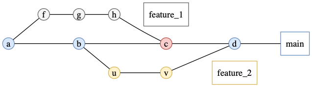
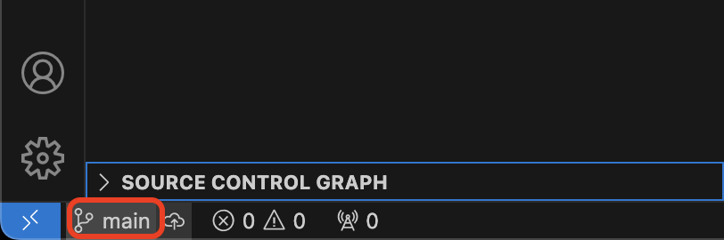
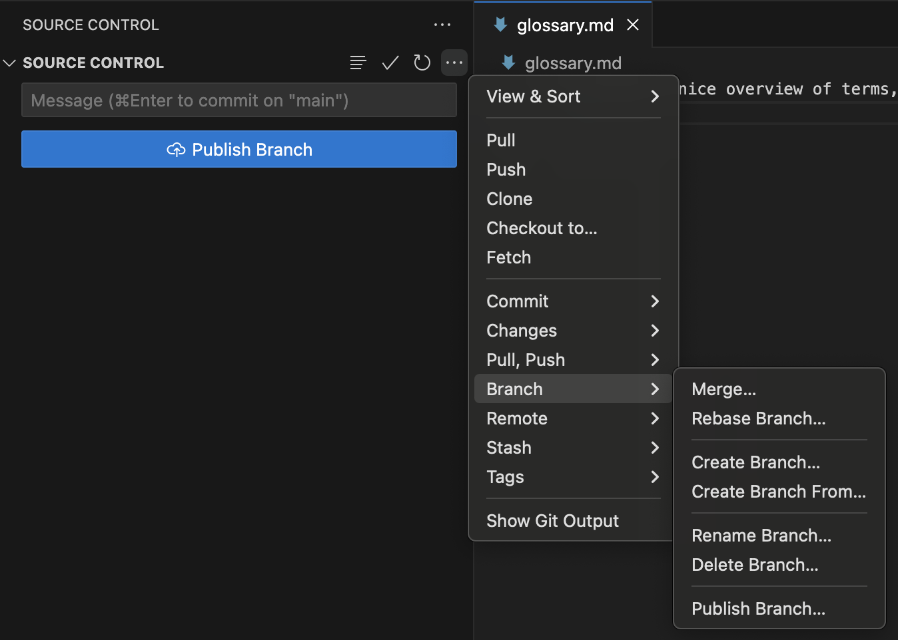

Branching out
Objectives
In this module, you will learn:
- Why branches are useful
- How to create and switch between branches
- Common branch naming conventions
- How to merge completed work back into the main branch
What is a Git Branch?
When developing software, it is often useful to work on new features, bug fixes, or experiments without affecting the main version of the code. Git solves this problem using branches.
- Branch
- an independent line of development within a Git repository. Each branch can contain its own commits and changes without affecting other branches.
By default, most repositories contain a branch called main (older repositories may call their main branch master). The main branch should represent a stable version of the project.
Another branch that is almost always present is develop. This contains the current development version of the code. Periodically, a new release publishes all the changes in develop to main. Consider main the latest stable version, and develop the current up-to-date version of the code.
Using branches makes it possible for multiple people to work on the same project simultaneously without interfering with one another's work. It also allows you to work on different features at the same time, although this should be avoided as much as possible, as it is easy to get confused when you have several branches in active development.
Why use branches?
- Keep unfinished work separate from stable code
- Allow multiple people to work on different tasks simultaneously
- Make it easier to review changes before they become part of the main project
- Reduce the risk of introducing bugs into the main branch
Merge
Once the work has been completed and tested, the new branch can be merged back into main.
- Merge
- the process of combining the changes from one branch into another branch. Git records the integration in the repository history.
Merging is where some of the real Git magic happens. When executing a merge, if everything goes well, your work will have seamlessly combined. Git harmonises changes in different files at different times by looking at the full edit history of each file, finding the latest common point in history for each file, and trying to execute all the changes from your branch to the file on the main branch.
Merging into main
When executing the merge command, ensure that you have checked out the branch that you want to merge the changes into, not the branch that you have been developing the new feature on.
Typical Branch Workflow
A common workflow looks like this:
- Start from an up-to-date
mainbranch. - Create a new branch for your work.
- Make commits on the new branch developing the functionality.
- Test the new functionality.
- Merge the branch back into
main. - Delete the branch once it is no longer needed.

Illustration of how branching and merging allows for simultaneous development. J. Bresson
Branch Naming Conventions
Although Git allows branches to be named almost anything, teams usually follow conventions so that branch names clearly communicate their purpose.
Common naming patterns include:
| Prefix | Purpose | Example |
|---|---|---|
feature/ |
New functionality | feature/add-analysis-pipeline |
bugfix/ |
Fixing a defect | bugfix/fix-date-parsing |
hotfix/ |
Urgent production fix | hotfix/security-patch |
docs/ |
Documentation changes | docs/update-installation-guide |
refactor/ |
Code restructuring without changing functionality | refactor/reorganize-utilities |
test/ |
Adding or updating tests | test/add-integration-tests |
Naming recommendations
- Use lowercase letters
- Separate words using hyphens (
-) - Make names descriptive but short
- Avoid spaces and special characters
Exercise: create and merge a feature branch
Create a new branch on which you will add some more terms to the glossary.
- Step 1: Open your sandbox repository in VSCode.
- Step 2: Select the branch selector in the bottom-left corner of the window by clicking the branch name.

- Step 3: In the menu that will pop up at the top of your screen, choose Create New Branch... and name it
feature/add-entries. VSCode will automatically switch to this newly created branch. - Step 4: Add at least two new terms to
glossary.mdand save the file. - Step 5: Commit your changes using the Source Control tab.
- Step 6: Switch back to the
mainbranch using the branch selector. - Step 7: Open the Source Control options (
..., top right of menu) and select Merge Branch.... Choosefeature/add-entries.
- Step 8: Verify that the new glossary entries are now visible on the
mainbranch. - Step 9: Delete the feature branch using the branch management menu once the merge has completed. You must stay on the
mainbranch to do this.
- Step 1: Navigate to the sandbox repository you created in the previous exercise.
- Step 2: Confirm your current branch using
git branch(to just give a branch name) orgit status(to give an overview of repo status, including branch name). - Step 3: Create and switch to a new branch:
git checkout -b feature/add-entries(the-bflag creates a new branch) - Step 4: Add at least two new terms to
glossary.mdand save the file. - Step 5: Stage and commit your changes.
- Step 6: Verify that your new commit exists:
git log --oneline - Step 7: Switch back to the main branch:
git checkout main - Step 8: Merge your completed work:
git merge feature/add-glossary-entries - Step 9: Confirm that the new glossary entries now exist on the
mainbranch. - Step 10: Delete the feature branch:
git branch -d feature/add-entries
Deleting branches
Don't worry about accidentally deleting an active branch: Git has a security barrier in place which disallows you from deleting unmerged branches. You can overwrite this security by using the -D flag.
Merge conflicts
One of the most powerful features of Git is the seamless merge of two branches. However, this seamlessness has limits. Useful limits. The most common circumstance of a merge conflict is if you and someone else have both been working on the same file on different branches. Consider this scenario: you have created a new branch. We will call the parent branch a and the child branch b Git executes merges by going back to the last point in time where the two branches were still the same, i.e. the moment branch b was created, and then applying all the commits from branch b to branch a. If branch a has not changed since branch b was created from it, there will never be a merge conflict. If branch a has continued to have new commits, but those commits only changed files that were not changed on branch b, there will never be a merge conflict. However, if branch b has commits that change the same file as later commits from branch a, merge conflicts might arise, and Git will tell you.
The best way to showcase this is by creating a merge conflict on purpose.
Exercise: create a merge conflict and resolve it
- Step 1: Go to your sandbox, checkout your
mainbranch, and make sure your staging area is empty. - Step 2: Create a new branch and add one more term to your glossary. Take note of the line number on which you add this new term and then commit the change.
- Step 3: Checkout your main branch again.
- Step 4: Add a term to the glossary on the same line number as the term in your other branch. Then commit the change.
- Step 5: Try to merge your feature branch into main.
Okay, what just happened? Git tried to merge the two branches, but it encountered two changes on the same line in the same file. Therefore, it pauzes the merge and opens the file that contains the merge conflict for you, so that you can make edits in the file until it is in the state that you want it to be after the merge. To help you, Git will add the content of both branches to the file, seperated by =======, and bookends them with <<<<<<< HEAD before the content in your current file state, and >>>>>>> feature/your-branch-name after the content from your feature branch.
- Step 6: Fix the conflict: keep the terms you want to keep, remove the rest and the dividers that Git added. VSCode will give you shortcuts to keep one or the other or both, which you can use if you want to.
- Step 7: Save the file. Add it to the staging area again.
- Step 8: Finish the merge by committing the merge commit.
Works cited:
https://git-scm.com/book/en/v2/Git-Branching-Branches-in-a-Nutshell https://carpentries-incubator.github.io/python-intermediate-development/14-collaboration-using-git.html